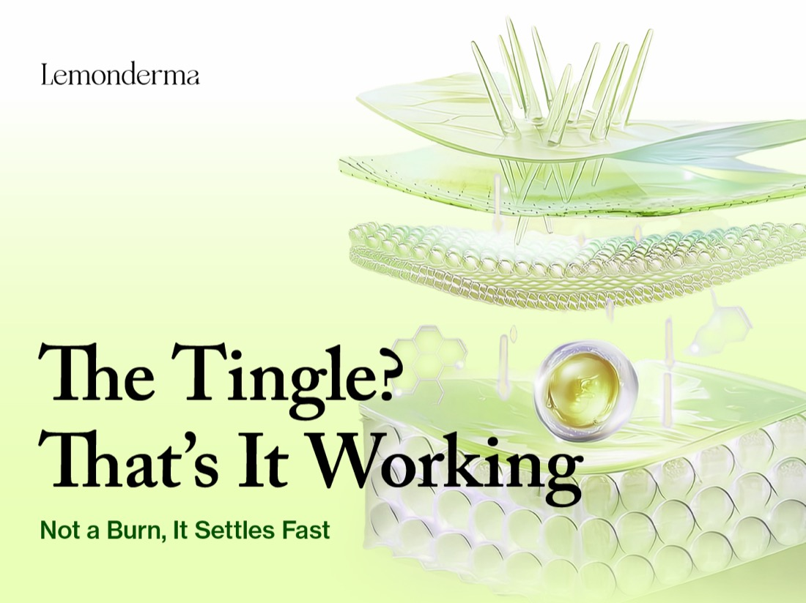
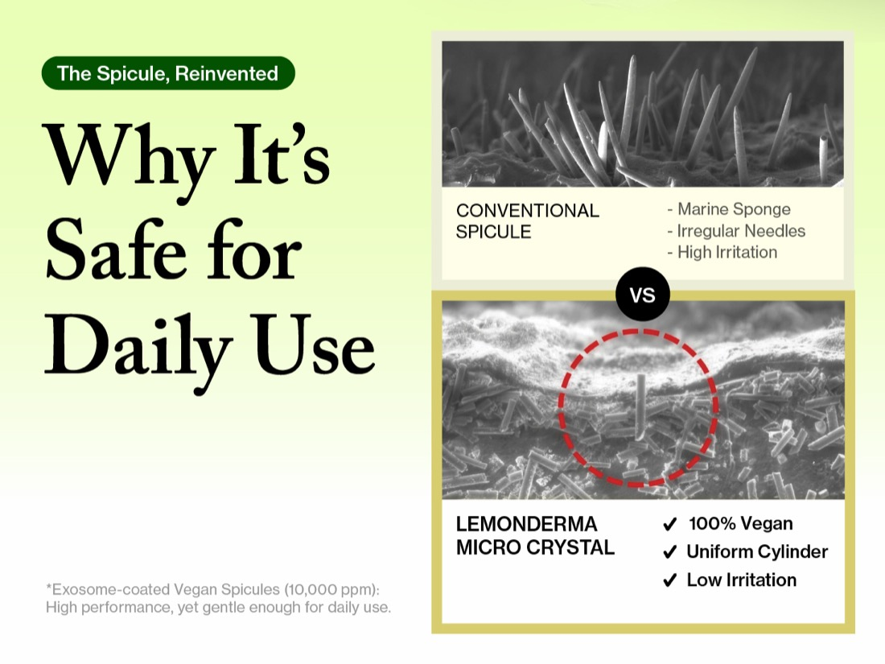
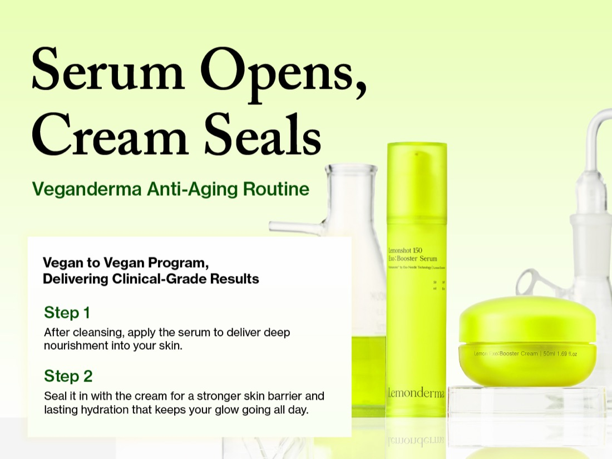

글로벌 유통 파트너
마케팅 가이드북
Edition 1.0 · 2026년 7월 · 한국어판
발행: VDVIA Inc. — LEMONDERMA 본사 마케팅팀
→ 오른쪽 화살표 키 또는 아래 다음 버튼으로 넘겨 보십시오.
Edition 1.0 · 2026년 7월 · 한국어판
발행: VDVIA Inc. — LEMONDERMA 본사 마케팅팀
→ 오른쪽 화살표 키 또는 아래 다음 버튼으로 넘겨 보십시오.
레몬더마는 한국의 비건 더마코스메틱 브랜드입니다. 모회사 지쉘바이오가 50개국 이상의 클리닉에 공급해온 엑소좀 연구를 일상 스킨케어로 옮겨 만들었고, 제조는 글로벌 1위 화장품 ODM인 COSMAX가 맡습니다.
이 책은 여러분에게 정답을 지시하는 문서가 아닙니다. 브랜드의 핵심은 본사가 지키고, 현지에서 무엇이 통하는지는 여러분이 가장 잘 압니다. 그래서 모든 항목에 세 가지 표시를 붙였습니다.
| 표시 | 뜻 |
|---|---|
| 🔒 고정 | 모든 시장에서 동일하게 적용됩니다. 변경이 필요하면 본사와 협의해 주십시오. |
| 🔓 재량 | 여러분이 결정합니다. 본사는 관여하지 않습니다. |
| 📎 참고 | 본사가 다른 시장에서 확인한 정보입니다. 참고 자료로 활용하십시오. |
국가별 시장·채널·규제 브리핑은 이 책에 담지 않았습니다. 해당 국가 담당 파트너에게는 별책 시장 브리핑을 함께 전달합니다.
"자연의 생기를 과학의 힘으로 피부에 전달할 수 있을까?"
"How can we deliver nature's vitality to the skin with the power of science?"
레몬더마는 이 질문에서 시작했습니다.
제주 레몬 엑소좀의 맑고 밝은 에너지에서 출발해, 자체 Purimax™ 기술을 더해 피부가 더 맑고 건강하게, 생기 있게 느껴지도록 만들었습니다. 여기에 흡수를 돕는 순한 비건 마이크로 크리스탈을 넣어, 모든 제형이 집에서 쓰는 작은 클리닉 케어처럼 작동합니다 — 효과 있고, 피부에 부드럽고, 지구에도 다정하게.
레몬더마는 그냥 스킨케어가 아닙니다. 자연과 과학이 만나는 자리이고, 혁신이 쓰기 쉬워지는 자리이며, 피부가 매일 조금씩 자신감을 얻는 자리입니다.
기술·성분 축의 브랜드 슬로건.
효능 검증 축의 브랜드 슬로건.
제주 레몬 엑소좀으로 만드는 스킨케어 — 집에서 누리는 클리닉 수준의 결과.
Exosome-powered skincare with Jeju Lemon — delivering clinic-level results at home.
레몬더마는 일반 화장품이 아니라 더마코스메틱으로 설계되었고, 한국에서는 약국에서만 판매합니다. 같은 K-뷰티 브랜드라도 일반 화장품과 구분되는 지점이 바로 이 유통 자격입니다. 해외에서 말하실 때는 "한국에서"를 반드시 함께 붙여 주십시오.
아마존 A+ 콘텐츠 구성을 그대로 옮긴 것입니다. 현지 상세페이지를 만드실 때 이 순서와 문구를 기준으로 쓰시면 됩니다.
효과는 느끼되, 따갑지 않게.
Feel the active. Not the burn.
잔주름까지 정돈하는 비건 글로우, 매일 쓸 만큼 순하게.
A vegan glow serum that smooths fine lines, gentle enough for every day.
Lemonshot 150 Exo:Booster Serum · 50ml / 1.69 fl.oz · Longevity | Radiance | Pore tightening
MFDS 미백+주름개선 · EWG Green · 비건 · 약국 전용(KR)
MFDS Brightening + Anti-Wrinkle (KR) · EWG Green · Vegan · Pharmacy-only (KR)
+21.4% BRIGHTENING · +18.7% ANTI-WRINKLE · +31.8% PORE TIGHTENING
n=21 · 10 days · 비포/애프터 이미지와 함께 사용
| 성분 | 고객에게 설명하는 말 |
|---|---|
| VEGAN MICROCRYSTAL | Eases a smooth path so your serum sinks in deeper. You feel it working, never a burn. |
| LEMON EXOSOME | Jeju-lemon messengers that tell your skin to glow and bounce back. |
| NIACINAMIDE 2% | Evens tone, refines the look of pores, and keeps skin calm. |
| ADENOSINE | Smooths the look of fine lines, gentle enough for sensitive skin. |
| WHAT WE LEFT OUT | No retinol. No AHA/BHA. No marine-derived ingredients. Strong, but kind to sensitive skin. |
① 흡수 통로를 살짝 → ② 글로우가 더 깊이 → ③ 따끔 = 흡수 중, 아픈 게 아님
1) Eases the path 2) Glow goes deeper 3) Tingle = absorbing, not hurting


진정도, 글로우도. 가볍게 봉인.
Seal in calm. Seal in glow.
리치는 답답, 라이트는 당김. 가볍게 덮어 진정시키고 채워 탄탄하게, 자극 없이.
Too rich clogs and too light leaves skin tight. This weightless seal calms reactive skin and firms it, no sting.
Lemonshot Exo:Booster Cream · 50ml / 1.69 fl.oz · Anti-wrinkle | Skin Barrier | Brightening
한국 약국 전용 · 미백+주름개선 기능성(MFDS) · EWG Green · 메이드 인 코리아 GMP · 100% 비건 · 순한 안티에이징
+18.7% FIRMNESS · +23.4% BRIGHTENING · +12.6% TEXTURE
n=21 · 10 days
| 성분 | 고객에게 설명하는 말 |
|---|---|
| CERAMIDE NP | Refills the barrier so skin feels firmer and bounces back, even as it loses ceramides with age. |
| PANTHENOL | Calms stressed, reactive skin and seals in a soft, cushiony comfort. |
| NIACINAMIDE 2% | Brightens unevenness for a clearer, more radiant complexion. |
| LEMON EXOSOME | A fresh, lit-from-within glass glow. The LEMONDERMA signature finish. |
| NO RETINOL · NO AHA/BHA · NO MARINE · 100% VEGAN | Gentle anti-aging with no sting, formulated clean for reactive skin. |
크림은 성분을 피부 속으로 밀어넣지 않습니다. 피부 표면에 얇은 막을 만들어 덮어서 지키는 방식입니다. 그래서 자극이 없습니다.
각 성분이 맡는 일은 이렇게 나뉩니다.
| 리치 크림 | 수분젤 | 강한 액티브 크림 | Lemonderma | |
|---|---|---|---|---|
| 따가움 없음 | ✓ | ✓ | ✗ | ✓ |
| 당김 없음 | ✓ | ✗ | △ | ✓ |
| 번들 없음(논그리시) | ✗ | ✓ | △ | ✓ |
| 메이크업 밀착 | ✗ | ✓ | △ | ✓ |
| 예민 피부 매일 OK | △ | △ | ✗ | ✓ |
| 탄력·탄탄(안티에이징) | △ | ✗ | ✓ | ✓ |
| 글로우 | △ | △ | △ | ✓ |
| 100% 비건 | △ | △ | △ | ✓ |
전성분·제품 사양·인증 자료는 브로셔에 정리되어 있습니다. → LEMONDERMA 브로셔 열기
같은 제품이라도 고객에게 제안하는 방식은 하나가 아닙니다. 아래 세 가지 방법이 모두 유효하며, 어느 쪽을 쓰실지는 여러분의 판단입니다. 함께 쓰셔도 좋습니다.
| 방법 | 어떻게 파는가 | 어떤 고객에게 |
|---|---|---|
| A 2단계 세트 | 세럼 + 크림을 하나의 루틴으로 | 객단가를 올리고 싶을 때 |
| B 세럼 추가 | 쓰던 루틴 가장 앞에 세럼만 추가 | 쓰던 제품을 바꾸기 싫은 고객 |
| C 크림 단독 | 쓰던 크림을 레몬더마 크림으로 교체 | 부담 없이 시작하려는 고객 |
세럼과 크림을 하나의 2단계 시스템으로 제안합니다. "세럼이 열고, 크림이 잠근다"는 서사가 그대로 판매 논리가 됩니다. 세트 구매로 이어지고 객단가가 올라가며, 두 제품이 함께 소진되어 재고 회전이 균형을 잡습니다.

고객이 이미 쓰고 있는 스킨케어를 바꾸지 않아도 됩니다. 세럼을 기존 루틴의 가장 앞 단계에 추가하도록 제안하는 방식입니다.
세안 후 레몬더마 세럼을 먼저 바르면, 비건 마이크로 크리스탈이 피부에 길을 순하게 열어줍니다. 그 뒤에 쓰던 에센스와 크림을 그대로 올리면 영양분이 훨씬 잘 전달됩니다. 고객은 애정하는 제품을 버리지 않아도 되고, 매장은 기존 제품을 대체하는 부담 없이 한 개를 더 팔 수 있습니다.
이 사용법은 레몬더마 공식 사용 순서와 이미 일치합니다 — 세안 → 레몬더마 세럼 → (쓰시던 에센스·크림) → 레몬더마 크림으로 마무리.
쓰고 있던 크림을 레몬더마 크림으로 바꾸도록 제안하는 방식입니다. 고객은 이미 크림을 쓰고 있으니 새로운 습관을 만들 필요가 없고, 제품 하나만 교체하면 됩니다.
크림 단독 판매의 강점은 가장 부담 없이 시작할 수 있는 제품이라는 점입니다. 세럼에는 바를 때 느껴지는 가벼운 작동감이 있는데, 크림에는 그 감각이 없습니다. 그러면서 미백·주름 이중 기능성(한국 식약처 등록)은 세럼과 똑같이 갖고 있습니다.
크림으로 브랜드를 먼저 경험한 고객에게 나중에 세럼을 권하는 순서도 자연스럽습니다. 방법 C로 시작해 방법 A로 넓히는 흐름입니다.
몽골에서 가장 널리 알려진 의사이자 방송인이 정확히 위 방법 B와 같은 방식으로 레몬더마를 소개하며 판매하고 있습니다. "쓰시던 걸 바꾸지 말고, 이걸 제일 먼저 바르세요"라는 제안이 전문가의 입을 통해 나갈 때 특히 잘 받아들여졌습니다. 여러분의 시장에도 이런 목소리가 있다면 함께 검토해 볼 만한 접근입니다.
아래 세 칸만 구분하시면 됩니다. 가운데 칸이 가장 중요합니다 — 크림 처방에 없는 성분이라 크림 소재에 쓰면 사실과 달라집니다.
레몬 엑소좀 · 1억 입자
제주 레몬 과즙 유래
미백·주름 이중 기능성
나이아신아마이드 2%
아데노신 0.04%
비건 마이크로 크리스탈
작동감 · 따끔한 느낌
"Feel the active"
전달 · 흡수 표현
크림 처방에 이 성분이 없습니다.
세라마이드 장벽
가벼운 마감감
진정 · 봉인
크림을 "진한 리커버리 크림"으로 소개하지 마십시오. 실제 사용감은 가벼운 마감 크림이라, 기대와 다르면 만족도가 떨어집니다.
| 세럼 | 크림 | 누가 정하나 | |
|---|---|---|---|
| 본사 현행 판매가 2026년 6월 조정 |
$36.58 | $36 | 참고용 — 본사 기준 |
| 가격 방어선 이 선 아래 금지 |
$28 | $26 | 🔒 고정 본사 |
| 현지 판매가 · 프로모션 | 방어선 위에서는 자유롭게 설계하십시오 | 🔓 재량 여러분 | |
방어선(현지 통화 환산 기준) 아래로 내려가면 브랜드 포지션과 다른 시장의 가격 질서가 함께 흔들립니다.
고객이 사기 전에 마음속으로 던지는 질문은 대체로 네 개입니다. 아래 네 가지가 그 질문에 순서대로 답합니다 — 효과가 있나 → 자극은 없나 → 근거가 있나 → 믿을 만한 제품인가.
네 가지 모두 브랜드 브로셔와 아마존 상세페이지에 실린 내용입니다. 순서를 바꾸거나 일부만 쓰셔도 됩니다 — 어떤 것을 앞에 세울지는 시장과 고객층에 따라 여러분이 결정하십시오 🔓 재량. → 브로셔 열기 · 이미지 자료
2026년 7월 개정 — 패키지 실물 색을 기준으로 전체 색상 체계를 다시 정의했습니다. 이전 자료의 색상값은 사용하지 마십시오.
브랜드 기준색은 패키지 실물의 Derma Yellow입니다.
#E6EE7A · RGB 230/238/122 · PANTONE 379 U
패키지 바탕에 쓰이는 브랜드 기준색입니다.
#59653c — 패키지 텍스트 전용입니다.
| 용도 | 값 |
|---|---|
| 배경 그라디언트 (전 매체 통일) | #fefcd0 (위) → #ffffff (아래) — 크림에서 화이트로. 웹·카드뉴스 구분 없이 이 값 하나만 사용합니다 |
| 박스·카드 테두리 | #ddea65 |
| 본문·제목·소제목 | #000000 — 순블랙. 회색 텍스트는 쓰지 않습니다 |
| 카드뉴스 제목 | #4b612d |
| 형광펜 강조 | #ddf746 투명도 30% — 글자 뒤에 깔아 주십시오(글자 위에 얹지 않습니다) |
| 수치·짧은 강조 문구 | #025200 — 짧게만. 문단 전체에 쓰지 않습니다 |
| 비강조 텍스트 | #000000 투명도 65% — 눌러야 할 텍스트에 |
| 경고 표시 | #e23b3b — 기능 표시 전용. 브랜드 컬러가 아닙니다 |
| 역할 | 서체 |
|---|---|
| 브랜드 문구 · 큰 제목 | Adobe Caslon Pro (세리프) — 제목은 Semibold |
| 소제목 · 본문 | Neue Haas Grotesk Text Pro (산세리프) |
| 한국어·현지어 | Pretendard 또는 Noto Sans — 자간 -0.04em |
https://use.typekit.net/ycy6gis.css를 한 번 불러오시면 됩니다.워드마크는 원형을 유지하고, 제공된 파일을 그대로 사용해 주십시오. SNS 이미지에서의 크기와 위치 기준은 다음과 같습니다.
| 콘텐츠 성격 | 위치 | 크기 |
|---|---|---|
| 브랜드가 공표하는 내용 수상·인증 안내 등 | 중앙 하단 | 이미지 가로 폭의 1/9 |
| 정보를 읽히는 콘텐츠 카드뉴스 등 | 상단 중앙 또는 좌측 상단 | 이미지 가로 폭의 1/9 |
판단 기준은 간단합니다 — "브랜드가 말하는 것"이면 하단에서 서명처럼 닫고, "정보를 읽히는 것"이면 상단에서 발신자를 먼저 밝힙니다.
로고, 제품 사진, 성분 이미지 등 공식 자료를 아래 드라이브에 모아두었습니다. 별도 요청 없이 자유롭게 다운로드해 사용하셔도 됩니다.
→ 브랜드 이미지 자료 드라이브 열기
레몬더마는 여러 시장에서 각기 다른 방식으로 판매되고 있습니다. 한국의 약국, 미국의 온라인 쇼핑몰, 태국의 오프라인 매장, 호주의 클리닉, 몽골의 전문가 추천 — 같은 제품이지만 잘 통하는 판매 방식은 시장마다 다릅니다.
본사의 역할은 이 시장들을 연결하는 것입니다. 한 시장에서 효과가 있었던 방법은 다른 시장에도 참고가 됩니다. 몽골에서 잘 통한 판매 방식(방법 B)이 이 가이드북에 실린 것처럼, 여러분의 시장에서 확인한 방법도 다음 개정판에 반영됩니다.
여러분은 혼자 이 브랜드를 파는 것이 아닙니다. 9개 진출국에서 같은 이름으로 함께 쌓고 있는 것입니다.
본사 마케팅팀은 여러분을 돕기 위해 있습니다. 성분이나 인증 자료가 필요하거나, 현지 캠페인을 설계하며 확인할 것이 생기면 편하게 요청해 주십시오. 함께 준비하겠습니다.
소재는 기다리지 않고 바로 쓰실 수 있습니다. 로고·제품 컷·성분 비주얼 등 공식 에셋은 드라이브에 열려 있으니 자유롭게 내려받아 사용하십시오.
→ 브랜드 에셋 드라이브 · 제품 브로셔
그리고 콘텐츠를 만들다가 이 가이드북에 없는 판단이 필요해지면, 그것도 알려주십시오. 그 질문이 다음 판을 더 좋게 만듭니다.
비건은 원료의 출처에 관한 이야기이고, 효능은 어떤 성분이 얼마나 들어가 어떻게 전달되는지의 문제입니다. 레몬더마는 미백과 주름 개선에 대해 한국 식약처의 이중 기능성 등록을 받았습니다. 브랜드 슬로건이 "Vegan that works"인 이유가 여기 있습니다.
레몬에서 피부를 자극할 수 있는 성분은 껍질에 몰려 있고, 과즙에는 거의 없습니다. 레몬더마는 제주 레몬의 과즙에서 온 성분만 사용합니다.
세럼의 가벼운 따끔함은 비건 마이크로 크리스탈이 피부에 길을 여는 물리적 감각이며, 화학적 자극이 아닙니다. 보통 5~10분 안에 가라앉습니다. 예민한 피부라면 격일로 시작하시면 됩니다.
엑소좀은 레몬더마의 정체성이자 모회사 지쉘바이오의 연구 배경을 보여주는 성분입니다. 미백·주름 개선의 근거는 나이아신아마이드 2%와 아데노신 0.04%(식약처 등록)입니다. 두 가지를 구분해 설명하시면 신뢰가 더 올라갑니다.
다릅니다. 추출물은 레몬에서 뽑아낸 액체 — 여러 성분이 섞여 녹아 있는 상태입니다. 엑소좀은 그 과즙 안에 원래 있던, 얇은 막이 성분을 감싼 아주 작은 입자만 따로 모은 것입니다. 액체에 녹아 있는 성분과 막에 싸여 보호된 입자의 차이입니다. 막이 있어서 안의 성분이 보호되고, 그래서 레몬더마가 말하는 "전달"과 이어집니다.
아닙니다. 세안 후 가장 먼저 레몬더마 세럼을 바르고, 쓰시던 제품을 그 위에 그대로 올리시면 됩니다. 피부에 길이 열린 상태라 뒤에 바르는 것들이 더 잘 전달됩니다.
같은 K-뷰티라도 레몬더마는 한국에서 약국에서만 판매하는 더마코스메틱입니다. 그리고 모회사가 50개국 이상의 클리닉에 엑소좀을 공급해온 바이오 R&D 회사입니다.
| 용어 | 뜻 |
|---|---|
| 엑소좀 (소포체 · EV) Citrus Limon Fruit Juice Vesicles | 레몬 과즙 안에 원래 존재하는, 얇은 막이 성분을 감싼 아주 작은 주머니만 골라 분리한 것. 막이 안의 성분(비타민C 등)을 보호합니다. 막에 싸인 입자이기 때문에 "전달"과 이어집니다. "1억 입자"는 이 입자의 수를 센 숫자입니다 |
| 레몬 과즙 · 레몬 추출물 Fruit Juice · Fruit Extract | 레몬에서 뽑아낸 액체. 여러 성분이 섞인 혼합물이며 막 구조는 없습니다. 엑소좀과의 차이는 막의 유무입니다 — 추출물은 성분이 액체에 녹아 있는 상태, 엑소좀은 막에 싸인 입자만 따로 모은 것입니다 |
| 비건 마이크로 크리스탈 | 피부에 미세한 길을 열어주는 광물 유래 성분(합성 광물 유리). 동물·해양 유래가 아닙니다. 세럼에만 들어갑니다 |
| NTA | 나노 입자를 세는 분석법. "1억 입자"의 근거가 되는 원료사 자료입니다 |
| MFDS 이중 기능성 | 한국 식품의약품안전처가 미백과 주름 개선 두 가지 기능성을 함께 인정한 등록 |
| ppm | 백만분율. 10,000ppm = 1% |
| 지쉘바이오 | 레몬더마의 모회사. 엑소좀 연구·생산 기업으로 50개국 이상의 클리닉에 공급 |
| COSMAX | 레몬더마를 생산하는 글로벌 1위 화장품 ODM 제조사 |
| K-Pharmacy | 한국 약국 유통 채널에서 판매되는 더마코스메틱 카테고리 |
함께 잘 팔아봅시다.
LEMONDERMA Global Distributor Marketing Guidebook
Edition 1.0 · 2026년 7월 · VDVIA Inc.